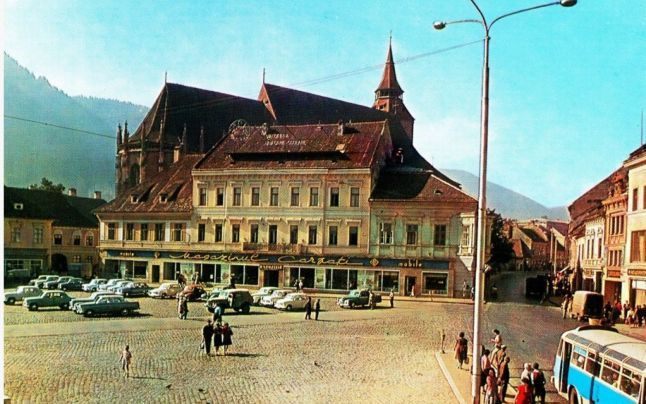

Brașov is a city in Transylvania, Romania and the administrative centre of Brașov County. According to the latest Romanian census (2011), Brașov has a population of 253,200 making it the 7th most populous city in Romania. The metropolitan area is home to 382,896 residents. Brașov is located in the central part of the country, about 166 kilometres north of Bucharest and 380 kilometres from the Black Sea. It is surrounded by the Southern Carpathians and is part of the historical region of Transylvania. The city is notable for being the regional capital of the Transylvanian Saxons of the Burzenland (Romanian: Țara Bârsei) administrative area in the past, and a large commercial hub on the trade roads between East and West. It is also the birthplace of the national anthem of Romania.
- History
- The oldest traces of human activity and settlements in Brașov date back to the Neolithic age (about 9500 BCE). Archaeologists working from the last half of the 19th century discovered continuous traces of human settlements in areas situated in Brașov: Valea Cetății, Pietrele lui Solomon, Șprenghi, Tâmpa, Dealul Melcilor, and Noua. The first three locations show traces of Dacian citadels; Șprenghi Hill housed a Roman-style construction. The last two locations had their names applied to Bronze Age cultures — Schneckenberg ("Hill of the Snails"; Early Bronze Age) and Noua ("The New"; Late Bronze Age).

- Middle Ages
- In 1211, by order of King Andrew II of Hungary, the Teutonic Knights fortified the Burzenland to defend the border of the Kingdom of Hungary. On the site of the village of Brașov, the Teutonic Knights built Kronstadt – 'the City of the Crown'.[17] Although the crusaders were evicted by 1225, the colonists they brought in long ago remained, along with local population in three distinct settlements they founded on the site of Brașov:
- -Corona, around the Black Church (Biserica Neagră)
- -Martinsberg, west of Cetățuia Hill
- -Bartholomä, on the eastern side of Sprenghi Hill
- 17th-19th centuries
- In 1689, a great fire destroyed the walled city almost entirely, and its rebuilding lasted several decades. Besides the German (Saxon) population living in the walled city and in the northern suburbs, Brașov had also a significant Romanian and Bulgarian population (living in the Șchei district), and also some Hungarian population (living in the Blumăna district). The cultural and religious importance of the Romanian church and school in Șchei is underlined by the generous donations received from more than thirty hospodars of Moldavia and Wallachia, as well as that from Elizabeth of Russia. In the 17th and 19th centuries, the Romanians in Șchei campaigned for national, political, and cultural rights, and were supported in their efforts by Romanians from all other provinces, as well as by the local Greek merchant community. In 1838, they established the first Romanian language newspaper Gazeta Transilvaniei and the first Romanian institutions of higher education: Școlile Centrale Greco-Ortodoxe ("The Greek-Orthodox Central Schools", today named after Andrei Șaguna). The Holy Roman Emperor and sovereign of Transylvania Joseph II awarded Romanians citizenship rights for a brief period during the latter decades of the 18th century.
- 20th century
- On 29 August 1916, during the First World War, the Romanian Army occupied Brașov. Romanian troops entered the city at around five o'clock p.m. and paraded towards the city square. Romanian rule over the city lasted until early October, when the area was retaken by the Central Powers in the Battle of Brassó (7-9 October 1916).[19] The Romanian mayor installed during the brief Romanian occupation was Gheorghe Baiulescu. His term lasted from 29 August, when the city was occupied by the Romanian Army, until 8 October – the height of the Battle of Brașov. On 9 October, at the end of the battle, the previous mayor (Karl Ernst Schnell) was reinstated In 1918, after the Proclamation of the Union of Alba Iulia, adopted by Deputies of the Romanians from Transylvania and supported by Deputies of the Saxons from Transylavania, they all voted to be a part of Romania, and declared their allegiance to the new Romanian state. The inter-war period was a time of flourishing economy and cultural life in general, which included the Saxons in Brașov as well. However, at the end of World War II many ethnic Germans were forcibly deported to the Soviet Union. A majority of them emigrated to West Germany after Romania became a democratic country.
Economy
Industrial development in Brașov started in the inter-war period, with one of the largest factories being the airplane manufacturing plant (IAR Brașov), which produced the first Romanian fighter planes used during World War II. After signing the armistice with USSR on September 12, 1944, the factory started repairing trucks, and in October 1945 it began manufacturing agricultural tractors. IAR 22 was the first Romanian-made wheeled tractor. In 1948 the company was renamed "Uzina Tractorul Brașov" known internationally as Universal Tractor Brașov. A big part of the factory was demolished during 2013 and 2014 giving way to buildings, shopping mall an recreation parks. Aircraft manufacturing resumed in 1968 at first under the name ICA and then under its old name of IAR at a new location in nearby Ghimbav. Industrialization was accelerated in the Communist era, with special emphasis being placed on heavy industry, attracting many workers from other parts of the country. Heavy industry is still abundant, including Roman, which manufactures MAN AG trucks as well as native-designed trucks and coaches. Although the industrial base has been in decline in recent years, Brașov is still a site for manufacturing hydraulic transmissions, auto parts, ball-bearings, construction materials, hand tools, furniture, textiles and shoe-wear. There is also a large brewery.